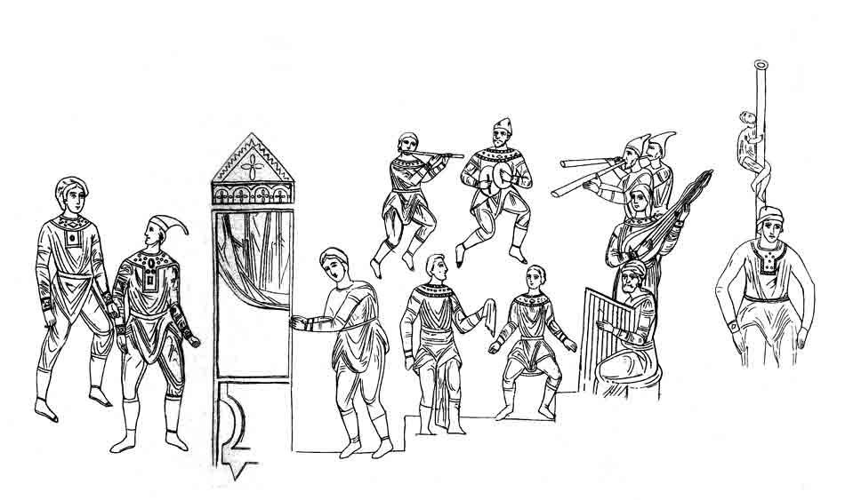
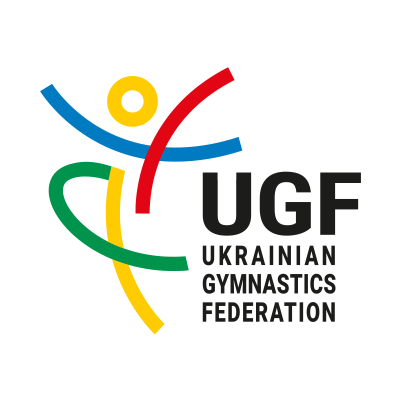

Акроба́тика (грец. ακροβατεω — ходжу навшпиньки) — вид мистецтва, який можна найчастіше побачити в цирку (циркове мистецтво) та в спортивній гімнастиці. Акробатичні вправи являють собою головним чином рухи обертального характеру навколо різних висів (кувирки, сальто і інше), а також вправи в рівновазі, виконані в незвичайних умовах. Вони можуть виконуватись на акробатичній доріжці, на приладах спеціальних конструкцій (трамплін, підкидна дошка, батут і інше). Вправи потребують виховання сили і гнучкості, спритності, сміливості і рішучості, швидкості реакції, удосконалювання координації рухів, тренування вестибулярного апарату.
В акробатиці розрізняють кілька груп вправ, в тому числі дві основні:
- стрибкова акробатика — різноманітні стрибки, перевороти, перекати, сальто;
- силова акробатика, що пов'язана із значними фізичними зусиллями, — стійки, мости, піраміди.
Акробатичні вправи виконують поодинці, з партнером і групами, іноді з використанням спеціальних приладів (трамплінів тощо). Вправи, що виконуються на підлозі без приладів, належать до так званої партерної акробатики.
Спортивна акробатика включає переважно стрибкову та силову акробатику; циркова, крім того,— вправи на конях та приладах, еквілібристику, ікарійські ігри.
Історія акробатики
Мистецтво акробатики було відоме вже в Старод. Єгипті, Греції, Римі, Китаї.
З 18 ст. акробатика дуже поширилася в цирках.
Акробатика в Україні
Попередниками сучасних акробатів у Київській Русі були скоморохи.
Починаючи з 1948-го, в Україні щорічно проводяться змагання з акробатики: 1948–67 — першості, від 1968 — чемпіонати.
В радянський період акробатика займала значне місце в циркових та естрадних програмах. Акробатика культивувалася в численних спортивних секціях; акробатичні вправи було включено до шкільних програм з гімнастики. Першим в СРСР звання «Заслужений майстер спорту» з акробатики присвоєно українським спортсменам-неодноразовим чемпіонам країни — братам А., В., B. Тишлерам та В. Мотузенкові.
У 1976-му році проведено перший чемпіонат світу з акробатики, серед чемпіонів якого — жіноча пара з Києва Н. Тищенко і М. Кухаренко.
Команда України досягла значних успіхів на міжнародних змаганнях, зокрема ставала чемпіоном Європи у 1993-му (Антверпен, Бельгія) і в 1997-му (Баунатал, Німеччина); здобувала першу сходинку на першості світу в 1997-му (Гонолулу, США) і на першості Європи в 1995-му (Зелена Ґура). Абсолютні чемпіони світу, які зробили помітний внесок у розвиток акробатики в Україні: М. Кухаренко, Н. Тищенко, Ю. Тишлер, С. Петров, С. Чижевський, В. Ляпунов, Г. Церишенко, Ю. Степченков, О. Косенко, Г. Демиденко, А. Ковпоша (Київ); О. Чабаненко (Донецьк); О. Мойсейчева, В. Жердєва, Н. Суріна (Харцизьк); А. Сафонов, Ю. Завірюха, С. Павлов, Д. Баїн (Миколаїв, Вінниця).
Розвитком акробатики в Україні опікується Федерація спортивної акробатики України, заснована 1948*го, від 1991-го року — Українська федерація спортивної акробатики, що входить до складу Міжнародної (від 1973) та Європейської (від 1997) федерацій гімнастики.
Призначення
Заняття акробатикою сприяють загальному фізичному розвиткові, виховують вправність, розвивають координацію рухів.
Посилання
- Акробатика [Архівовано 25 лютого 2022 у Wayback Machine.] // ВУЕ
- Спортивна акробатика [Архівовано 14 листопада 2018 у Wayback Machine.] / Українська федерація гімнастики
Література
- Акробатика для всех: [учеб.-метод. пособие] / В. Ю. Сосина, В. А. Нетоля. — Киев: Олимпийская литература, 2014. — 196, [1] с. : рис. — Бібліогр.: с. 194—195. — 1000 пр.
- Акробатика. — К. : Здоров'я, 1969. — 60 с. з іл. — (Б-чка громад. тренера-інструктора).
- Акробатика: посібник для викладачів серед. шкіл і громад. тренерів. — К. : Здоров'я, 1966. — 90 с. : іл.
- Акробатика: (Посібник для інструкторів-масовиків). — К. : Держмедвидав, 1952. — 120 с. з мал. : 1 вкл. л.
- Юный акробат / Болобан В. Н. — К.: Здоров'я, 1982. — 160 с.